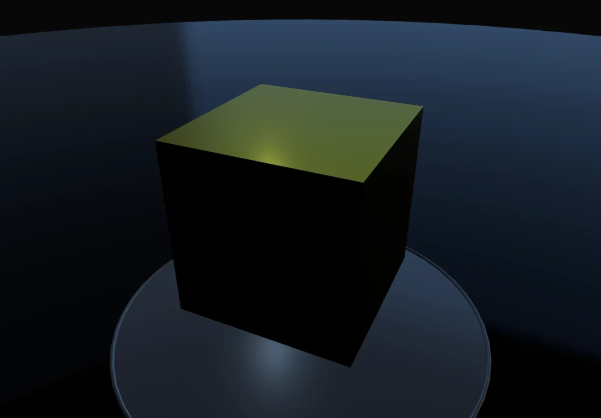

Computational neuroscience × graphics systems
Making hidden processes inspectable.
I build research and creative tools for things that are difficult to see directly: morphogen fields, population-atlas change and transitions between 3D forms.
- Focus
- scientific software
- Current study
- Neuroscience, UCL
- Working method
- model · test · disclose
Selected work
Three projects, three honest demonstrations.
Each preview states what is computed, what is recorded and what remains outside the model.
01
Active research prototype
2026–present
MorphBrain
An interactive developmental-neuroscience demonstrator. Its patterning view, called World A, solves deterministic SHH/BMP reaction–diffusion fields and passes them through a project-authored broad positional decoder.
- Computed: two scalar concentration fields on a fixed coronal grid.
- Readout: broad dorsal, intermediate and ventral positional identity.
- Separate data view: CC0 population-average dHCP surfaces, GW21–36.
The atlas is reference playback, not the molecular model developing. Decoder constants and the 120-step horizon are illustrative rather than fitted biological parameters. The weekly white-matter surfaces come from the dHCP fetal surface atlas (CC0).

Real application · loads on request
Run the World A experiment
Set sources, run the deterministic solver, replay checkpoints, then inspect the separate atlas.
02
Desktop prototype
December 2025
Model Morpher
A Python prototype for transitioning between meshes with different topology by interpolating signed-distance fields and reconstructing each intermediate surface with marching cubes.
- Pipeline: mesh repair → SDF sampling → interpolation → isosurface extraction.
- Compute: CPU and conditional PyTorch/CUDA paths.
- Recorded example: Allen Mouse CCF structures selected through BrainGlobe.
This is a recorded result from the desktop PyVista prototype; the Python/CUDA pipeline is not running inside this web page.
allen_mouse_25um v1.2. Image/data credit: Allen Institute.
Atlas,
Wang et al. 2020,
Claudi et al. 2020,
citation policy
and noncommercial-use terms.
03
In active development
January 2026–present
Morphliner
An ongoing browser-native 3D motion editor for arranging meshes on a timeline, computing SDF-based transitions with GPU and CPU fallback paths, and exporting animation.
- Editor: timeline authoring, camera, lighting and materials.
- Engine: WebGPU/WGSL with a tested fallback chain.
- Output: browser-side still and animation export workflows.
The preview uses recorded runtime frames. A public, read-only Morphliner embed is under consideration; it is not presented here as a shipped feature.

Recorded runtime framesThe through-line
Related questions, deliberately separate claims.
-
01
Model Morpher
Can unlike meshes transition through a shared signed-distance representation?
-
02
Morphliner
Can mesh transition become a reliable, browser-native editing and export workflow?
-
03
MorphBrain
Can a scientific interface make computed mechanism, authored interpretation and observed atlas data unmistakably distinct?
MorphBrain does not currently reuse Model Morpher’s SDF/marching-cubes path. Its atlas viewer uses registered vertex interpolation, and its molecular intervention does not deform that atlas.
About